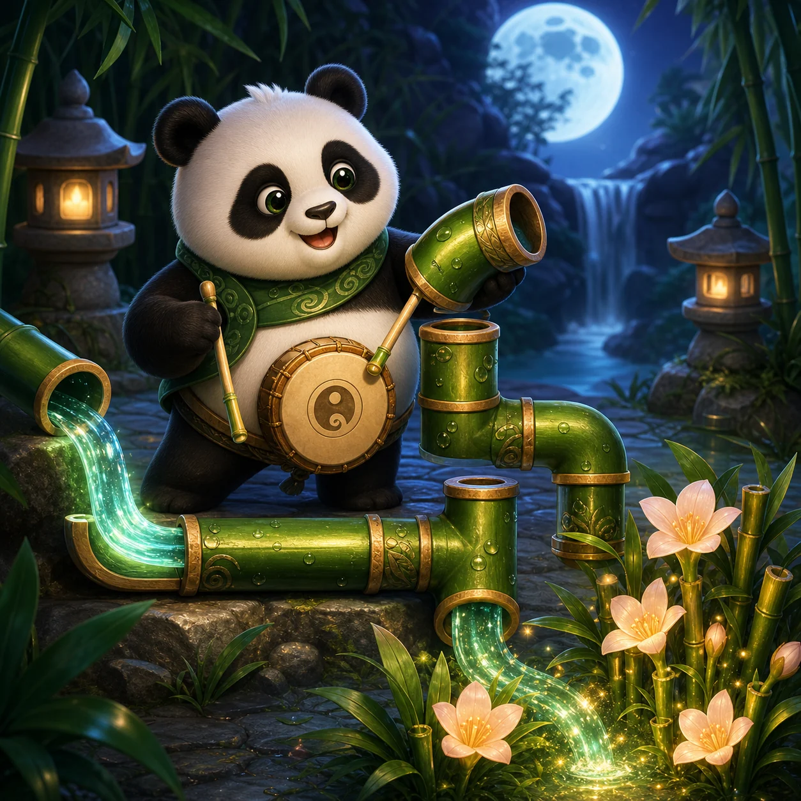

PANKO'S PUZZLE GARDEN
Panko's Bamboo Waterway
Turn the bamboo. Let every drop reach the flowering grove.
WeightPlay Original Game Guide
Panko's Bamboo Waterway
Rotate a complete bamboo network so water can travel from the carved spring to the flowering basin.
How to Play
- Choose any unlocked waterway.
- Tap or activate a bamboo pipe to rotate it clockwise.
- Connect the spring to the flowering basin without a broken joint.
- Use Undo, Hint, or Restart whenever you need them.
Controls and Rules
Use touch, mouse, Enter, or Space to rotate pipes. Arrow keys, Home, and End move focus around the five-by-five board. Water flows only through matching openings between neighboring pipes.
Strategy Tips
- Trace backward from the flowering basin.
- Use corners to eliminate impossible orientations.
- Check every junction before spending a hint.
Campaign
Thirty handcrafted waterways across six chapters grow from compact routes into branching bamboo networks. Completed waterways remain replayable and progress is saved in this browser.
Player and Save Information
Recommended for ages 9+ and family puzzle play. The game has no timer, account requirement, or competitive ranking.
Frequently Asked Questions
- Are hints limited?
- No. Hint rotates one unresolved required pipe correctly.
- Can I replay a waterway?
- Yes. Every unlocked waterway remains available.
- Is progress saved?
- Yes, only in this browser.